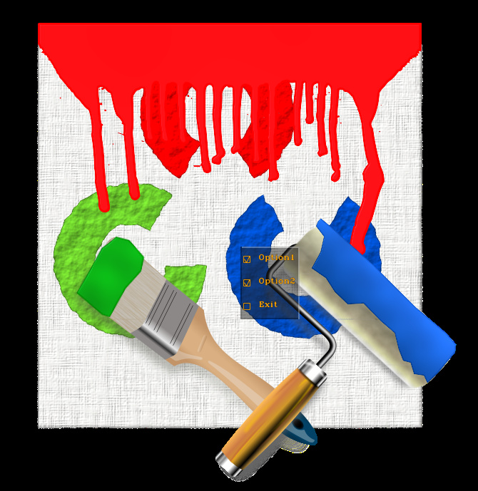

Giving the user multiple options and collecting them is common to canvascv::CheckBoxes, canvascv::RadioButtons and canvascv::SelectionBox.
We going to take a look at using the CheckBoxes now. The concept is similar to RadioButtons and the SelectionBox. In the tutorial about layout managers we'll see an example frame with several of them together.
CheckBoxes with a callback
This is the normal and preffered way of working with widgets.
The CheckBox alows you to register a canvascv::Widget::CBUserSelection callback, which will be called on user altering the widget selections.
You get the widget and an index to the item that changed. It is then up to you to inspect the widget at that index (or other indexes).
See this code example, and read the notes after it:
#include <canvascv/canvas.h>
#include <canvascv/widgets/checkboxes.h>
int main(int argc, char **argv)
{
--argc;
++argv;
if (! argc)
{
Canvas::fatal(
"Must get a path to an image as a parameter" , -1);
}
Mat image = imread(argv[0]);
if (image.empty())
{
}
Canvas c(
"CheckBoxes", image.size());
c.setScreenText("Use q to exit");
namedWindow("CheckBoxes", WINDOW_AUTOSIZE);
c.setMouseCallback();
"Option1",
"Option2",
"Option3"
},
{
c.setScreenText(CCV_STR(
"Option1:" << checkBoxes->
isChecked(0) <<
"\n" <<
"Option2:" << checkBoxes->
isChecked(1) <<
"\n" <<
"Option3:" << checkBoxes->
isChecked(2) <<
"\n\n" <<
"Use q to exit"
));
},
{image.cols / 2, image.rows / 2});
int key = 0;
c.setImage(image);
do
{
key = c.waitKeyEx();
} while (key != 'q');
destroyAllWindows();
return 0;
}
Notes:
- CCV_STR lets you create a string as you would write into a stream.
- This tutorial is using C++11 lambda expressions as callbacks, but anything which has the "void(Widget*,int)" signature will work.
- Note the alternate way of displaying images
- Here is a possible outcome of this code:
CheckBoxes with polling
Using polling might serve you right for some reason...
Instead of using a callback, you can check the values on each iteration.
This is not the recommended way.
See this code and read the notes after it:
#include <canvascv/canvas.h>
#include <canvascv/widgets/checkboxes.h>
int main(int argc, char **argv)
{
--argc;
++argv;
if (! argc)
{
Canvas::fatal(
"Must get a path to an image as a parameter" , -1);
}
Mat image = imread(argv[0]);
if (image.empty())
{
}
Canvas c(
"CheckBoxes", image.size());
namedWindow("CheckBoxes", WINDOW_AUTOSIZE);
c.setMouseCallback();
"Option1",
"Option2",
"Exit"
},
Point(image.cols / 2, image.rows / 2));
int key = 0;
int delay = 1000 / 25;
Mat out;
do
{
c.redrawOn(image, out);
c.imshow(out);
key = c.waitKeyEx(delay);
} while (! checkBox->isChecked(2));
destroyAllWindows();
return 0;
}
Notes:
- When polling is used we need all these stages in the main loop -
- Here is a possible outcome of this code:

That's all for this tutorial

 1.8.11
1.8.11